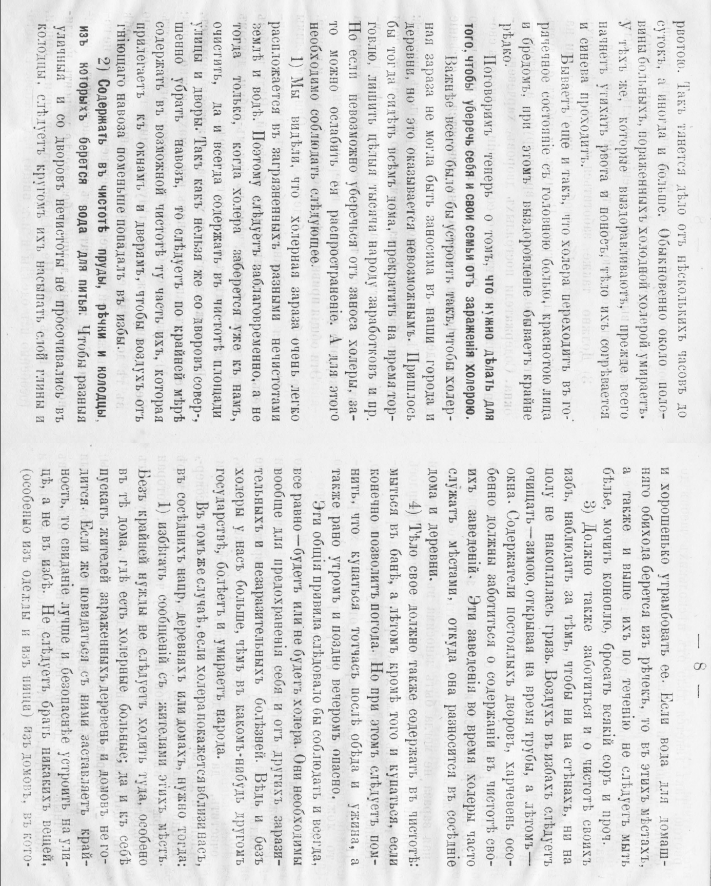

Донесение
Всенижайше доношу Вашему благородию, что в деревне N крестьяне учинены к смуте. Объявился у них подметный листок, санитарный манифест, а в нем прописаны дерзкие и противные истине слова. Будто в нашей империи от хворей и неустройства православного люду мрет больше, нежели у чужеземцев в чужих краях. И ещё против того чтобы все дома сидели при енпидемiи и никуды не ездили, как Государь повелел. Сию пагубную книжку по ночам тайно читают мужикам, а выучил их грамоте без дозволения начальства беглый или писаришка какой-то подпольный. Боюсь, барин, кабы от тех речей меж крестьянами бунта не вышло.
Пахом
